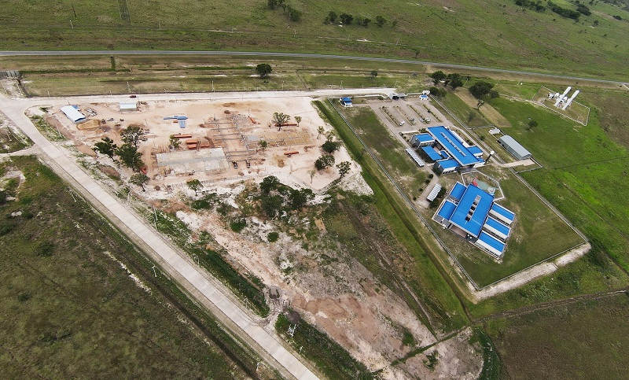
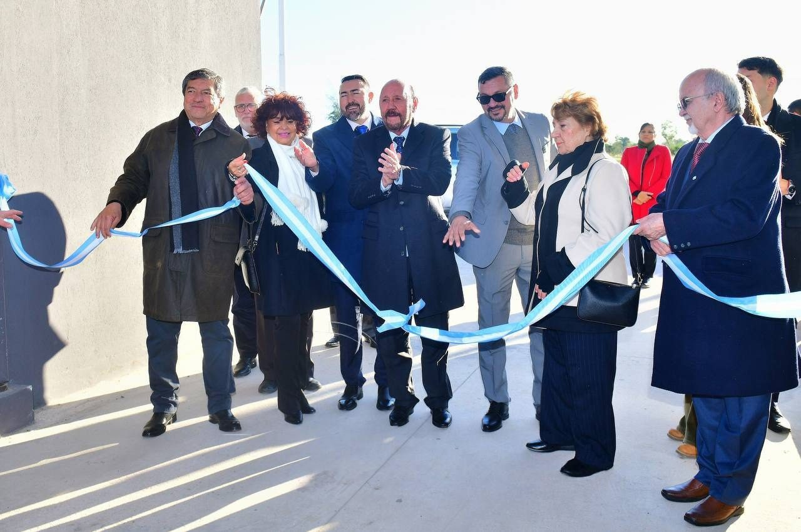

Reseña Historica
Génesis y Planificación (2013-2014)
- Julio de 2013: El concepto del instituto surgió de forma paralela a la planificación del Polo Científico, Tecnológico y de Innovación (PCTI) en Formosa. Se buscaba crear trayectos formativos que acompañaran el desarrollo de este espacio.
- Definición del Modelo: Tras la audiencia pública del PCTI, se determinó la necesidad de un instituto tecnológico donde la teoría y la práctica estuvieran en constante consonancia, adaptándose a las demandas del mercado regional.
- Investigación Curricular (2014): Durante este año se definieron los perfiles de egreso deseados. El equipo de trabajo exploró planes de estudio de instituciones nacionales y extranjeras, estableciendo contactos con especialistas y universidades para organizar la oferta académica.


Desarrollo de la Tecnicatura en Mecatrónica
- Enfoque Multidisciplinario: Se seleccionó la Mecatrónica como carrera insignia por su capacidad de integrar electrónica, mecánica, informática y control automático para el diseño de sistemas inteligentes.
- Estandarización (2016-2017): Entre fines de 2016 y durante 2017, se trabajó junto a la Dirección de Educación Técnica provincial, el INET (representado por el Ing. Petzl) y especialistas locales como Francisco Pielmann para redactar los estándares de la carrera.
Institucionalización y Apertura (2018)
- Creación por Decreto: El 31 de enero de 2018, mediante el Decreto Provincial N° 18/2018, se creó oficialmente el Instituto Politécnico Formosa.
- Misión Institucional: Se fundó como una institución de avanzada orientada a procesos que articulan el estudio, el trabajo, la investigación y la producción industrial de alta tecnología.
- Inicio de Actividades: Las clases de la Tecnicatura Superior en Mecatrónica comenzaron formalmente el 19 de marzo de 2018. La primera cohorte inició con cuarenta alumnos y tuvo como sede inicial las instalaciones de la EPET N° 1.
Mision y Vision
Misión: "Formar profesionales técnicos de excelencia mediante un modelo educativo integral que articula la teoría, la práctica y la investigación. Nuestra misión es potenciar el desarrollo tecnológico de la provincia de Formosa, brindando a nuestros estudiantes las herramientas y conocimientos necesarios para liderar procesos de innovación en la industria, el desarrollo de software y las nuevas tecnologías, contribuyendo así al progreso socioeconómico de la región."
Visión: "Consolidarnos como una institución de referencia nacional e internacional en educación tecnológica y científica. Aspiramos a ser el motor de transformación del Polo Científico, Tecnológico y de Innovación, siendo reconocidos por la calidad de nuestros egresados, nuestra capacidad de respuesta a las demandas del mercado global y nuestro compromiso constante con la vanguardia tecnológica y el desarrollo sostenible."
Autoridades
Director: Dr. Horacio Adrián Gorostegui (Doctor en Ciencias de la Ingeniería).
Directora de Carreras: Dra. Alicia Noemí Alcaraz.
Estructura Organizativa del IPF
La organización del Instituto Politécnico Formosa está diseñada para garantizar la excelencia académica y la vinculación efectiva con el sector productivo y tecnológico. Se divide en tres niveles principales:
1. Nivel Directivo y de Conducción Es la máxima autoridad del instituto, responsable de la toma de decisiones estratégicas, convenios institucionales y la visión política-educativa.
- Dirección General: Responsable de la gestión integral y representación del IPF ante el Ministerio de Cultura y Educación y el Polo Científico.
- Consejo Consultivo: Espacio de articulación con sectores del gobierno y la industria para actualizar los planes de estudio.
2. Nivel de Gestión Académica Se encarga de la planificación, supervisión y evaluación de los trayectos formativos.
- Dirección de Carreras: Coordina los planes de estudio y asegura la calidad pedagógica.
- Coordinaciones de Área: Cada carrera (Mecatrónica, Software, Química, Telecomunicaciones) cuenta con un responsable técnico-académico.
- Cuerpo Docente: Profesionales y especialistas encargados del dictado de clases y el seguimiento de prácticas profesionales.
3. Nivel de Apoyo y Servicios Estudiantiles Áreas operativas que brindan soporte técnico, administrativo y humano.
- Secretaría Académica / Bedelía: Gestión de inscripciones, actas de examen, títulos y documentación de alumnos.
- Departamento de Prácticas Profesionalizantes: Gestiona las pasantías y el vínculo de los estudiantes con las empresas del Polo Científico.
- Mantenimiento y Laboratorios: Personal técnico encargado del soporte de los laboratorios de alta complejidad y equipos de 3D o robótica.